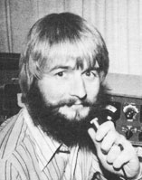

The simple life at the Junction starts with the house, originally the shell of a small fishing cottage. As Ray put it: "No plumbing, no electricity, no floors . . . just a hull. But the price was right.
"We had to have the place livable by the opening of school, just six weeks off, and everyone pitched in to help. Eight-year-old Billy worked as hard as anybody. A job in the city kept me busy 12 hours a day, so we tackled the house late at night and on weekends. The materials were salvaged from various buildings that were being torn down here. in Houston, and we got all of them simply by asking very nicely. Most demolition companies are glad to have you remove the leftovers they can't sell readily.
"We finished the bedrooms first, and went on to nail cabinets, install scrounged bathroom fixtures, make a plywood kitchen counter, and put in a sink. We'd never realized just how much work was involved in fixing up a house!
"Then the real fun began. We checked around and found that the cost of a water well would be about $1,200. There was no way we could afford that-and school time was getting nearer-so we decided to do the work ourselves.
"Sometimes ignorance is bliss. Since I'm not an engineer or a professional driller, I didn't know that you can't sink a well in this country without a lot of machinery. But we did it with nothing more than a twisted spring from an old car and plenty of elbow grease . . . because there just wasn't anyone to tell us we couldn't. Fortunately, the water wasn't too far down and there was plenty of it. We installed a 35-year-old piston pump to get it to the house.
"Our second hardest job was digging the hole for the 1,000-gallon septic tank and the ditch for the field lines. The family decided they'd handle that project while I was at work. It was a slow, backbreaking process (excavating through ten feet of caliche clay is no snap even with machinery).
"Then we discovered that we had an audience. Since a drainage ditch behind our house empties into the Houston water supply, the pollution control bureau began to take an interest in our activities. Rather surprisingly, this turned out to be a tremendous help. The department's agent showed us how to design our system and piping so that we wouldn't contaminate the lake even in wet weather . . . and, thanks to his advice, we built our tank of secondclass brick for less than $15.00 instead of paying $250 for a concrete unit. That was the first time I had ever had any real assistance from a bureaucratic agency. Miracles never cease!
"With one week to go before school started, we moved into our little dream. Believe me, swapping a three-bedroom house for a 20' X 30' cabin sure makes for togetherness. The place was small, all right. . . but it was at least ours. Every nail that went into it was paid for (or honestly scrounged from a piece of old lumber).
"We've been here two years now. The land is cleared, the grass is growing, a 10' X 30' backroom has been added, and two storage houses have been built. Our greenhouse material is lying on the ground outside as I write, our winter supply of wood is cut and stacked, and the timbers for the barn are in the yard. Soon we'll complete the backroom and the floors and finish the kitchen cabinets and paneling. Our methane digester is complete, and an electric generator is sitting near the house ready to crank if the light company gets too greedy. The old Ben Franklin cooks just great on most any old tree limb.
"What's more important, we're enjoying ourselves for the first time in 18 years. We've found our happy, medium. We're richer, more satisfied, more contented, and-most of all-more at peace with the world and our fellow men than ever before. It's worth it. Many times over."
In the long run, the Martins would like a place with more land . . . but they aren't waiting until then to get their kit of tools-for-living together. As Ray said, "What we're actually doing here is learning and refining our so-called natural skills against the time when we can obtain the land we need to be really self-sufficient. In other words, we're making the mistakes here where it isn't so critical (and where I can slip into Houston and make a few bucks off the system)."
One of the Martins' "tools"-the methane generator Ray mentioned above-is an experimental piece of what will eventually be an overall energy package (see Fig. 1 for Ray's conception of the complete system). Until the family gets the herd of milk goats they're working toward, however, the digester won't be producing much methane. At present the 7-1/2 hp, one-cylinder engine is being run on "wood gas" or "town gas". According to Ray, "This type of fuel is derived from wood burned in a closed atmosphere. The gas can be routed to a mixing valve and made to run an engine, or cleaned and pumped into a pressure vessel for cooking and lighting: It can be used like methane . . . but I don't like to see inexperienced people work with it, as it's extremely dangerous." (See MOTHER NO. 27for articleson the use of woodgas to power motorvehicles.-MOTHER.)
Ray has also worked the bugs out of other parts of the Martins' self-sufficiency system. A retired refrigeration compressor driven by the onelung engine can be used to compress methane into an old butane tank at pressures up to 250 psi. At other times, when the powerplant is used to drive an electrical generator, it provides "juice" for the family ham rig. And family ham rig it is. Ray has an Advanced Class license (WA5CCZ), Barbara a Technician rating (WB5CF0), and Ben his Novice (WN5KKZ). For sure, these folks won't be out of touch!
When circumstances permit, the following radio amateurs would like to offer the use of their stations free of charge to others. Certain of them also have access to information in specific areas of interest, or to people with experience in particular fields. If asked, these hams will attempt to provide assistance in the categories listed. Contact individuals directly to make arrangements. (Also shown are the license class of the station, the bands and modes normally used, and the availability of a phone patch. This information is given to facilitate schedulemaking.)
VE3GQN, Syd Harding, Box 1499, Deep River, Ont., Canada. (Also G3GQN in U.K.) Advanced; 80 through 10 plus 2 FM; SSB (SSTV coming). Electronics; instrumentation; Ivan Illich; bookbinding skills exchange; Brazil.
VE8R0, Al Rempel, P.O. Box 310, Pine Point, N.W.T., Canada. 40 through 10; SSB. British Columbia; electronics; instrumentation (pressure gauges, control systems, etc.).
K6CSP, Bill Goodart, 7506 Stewart Ave., Los Angeles, Calif. 90045. Extra; 160 through 10; CW, SSB, Phone patch. Electronics; computers; avocado farming; surfing; kayaking.
WB6EAR, John H. Cox, 929 Cedar Ave., Mare Island, Calif. 94592. Advanced; 80 through 15, 6, and 2; SSB, FM. General engineering; backpacking; crosscountry skiing.
WB6KDZ, Stan McEtchin, 2973 16th St., San Pablo, Calif. 94806: Advanced; HF bands and 2 FM (mobile); SSB. House and industrial wiring; shopwork, plumbing, and welding; refrigeration; living in British Columbia, Alberta, and the Arctic; metal sculpture; woodcarving.
WA7GEA, Jon Babcock, Box 68, Thompson Falls, Mont. 59873. General; 80 through 10; SSB, CW, RTTY. Classical Chinese; astrology; gardening; log cabins; computers.
WA1G0I, Barron Littlefield, 25 Knoll Street, Bristol, Conn. 06010. Extra; 80 through 10 and 2 FM; CW, SSB, SSTV (receive only). Electronics; alternative energy sources; geology and natural resources.
WN4MQB, Dana Taylor, 2025 Brownsboro Rd., Apt. 401, Louisville, Ky. 40206. Novice; 80 and 40; CW. Music; computer science (COBOL, FORTRAN).
WB5JE0, Gerald Clough, 7020 Grand Canyon, No. 136, Austin, Tex. 78752. Advanced; 75 through 15; SSB. Photography and processing; preparing PR material; ham license classes via Austin A.R.C.
W5SXY, Bill Johnson, 205 Castleway, Victoria, Tex. 77901. 75 through 10 and 2 FM; SSB. Living in Surinam, South America; electronics and power; knife making; photography.
WA8DDI, Dennis Havlena, 9353 Gillman, Livonia, Mich. 48150. General; 160 through 2; CW, RTTY. Wild plants and foods; old-time Irish fiddling; will help anyone get ham license.
WB8QYM, David Kazdan, 23655 Hermitage Rd., Cleveland, Ohio 44122. General; 40, 15, 10; CW, SSB. Electronics; photography (photochemistry and. optics); music.
WN8TMP, David Browne, 89 W. 8th Ave., Columbus, Ohio 43201. Novice; 40 and 15; CW. Electronics; travel in western U.S.; backpacking; construction.
WB9LH0, Schley Cox, 1613 Culbertson Ave., New Albany, Ind. 47150. General; 80-10 CW, 75 SSB. Journalism; photography; gardening; bicycling; backpacking.
WBODJQ, Rick Paine, 2316 Pine St., Brainerd, Minn. 56401. General; 75; SSB. Electronics; music; wind and solar power.
WNØLCH, Dave Lee, Rt. 2, Cokato, Minn. 55321. Novice; 80 and 15; CW. Canoeing/camping; art (oil painting, etc.); beekeeping.
Like most of us who have picked up the ham radio tool, the Martins are enthusiastic about it. Ray put it this way: "Our 500-watt SSB and code station cost us the tremendous sum of 100 bucks. I bought a broken-down rig and did the repairs myself, thereby saving several hundred dollars I'd have had to spend on one that worked. It's a thrill to have something you brought to life reach out over thousands of miles of empty space and communicate with another person. You have to do this to know what it's really like . . . breathtaking!
"People who haven't tried hamming generally think it's too much trouble to learn the fundamentals necessary for the government license. Believe me, using the airwaves is a privilege that's worth any price. As hams, we can travel the world direct from our living room and talk with others who share our interests. We rap with people in every lifestyle-kings and princes, governors, senators, movie stars, farmers, ecologists, engineers, ditchdiggers-and get their true views without the bull. The ham bands are the only place in this society where everyone is equal. Radio has given us a deep insight into many different viewpoints, and I think that's the most wonderful experience anyone can enjoy."
HI FROM NOVA SCOTIA
One nice thing about ham radio is that you can pack up, move, and still keep in touch with the same good people. I'm writing this installment of my column from Halifax, the Macdonalds' new home. A portable rig has me back on the air after a fashion, and by the time you read this we hope to be into more permanent quarters with a decent antenna up and so forth.
By popular demand, New Directions in MOTHER NO. 34 will deal with some really low-cost ways to get started in ham radio. 'Til then.
Peace,
Cop Macdonald (WØORX/VE1)
c/o General Delivery
South Postal Station
Halifax, Nova Scotia
Canada
|
7 1/2 hp might seem very small, but all units are not used al the time. The load is staggered between alternator and air compressor. The air compressor has an output of 3.5 cu. ft. per minute. It only runs about 20% of the time, leaving just the alternator for the engine to power the remaining 80%. The waste heat generated by this rig is ""free"", so to speak, since it represents no load on the engine. (The air compresor is an old York refrigeration compressor.) |
 |
|
|
|
|
|